Views, Dialogs and Toolbar
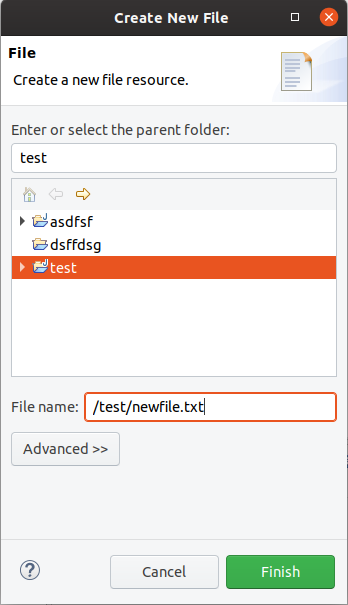
Text Editors
General > Appearance > Colors and Font > Basic > Text Font
Screenshot of ligatures rendered in the Java Editor on Windows 10:
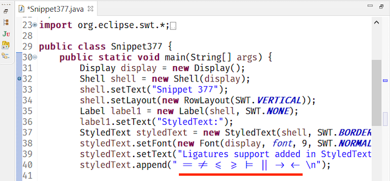
Themes and Styling
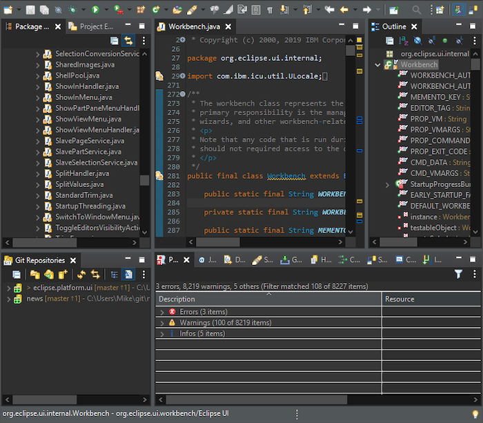
Old:
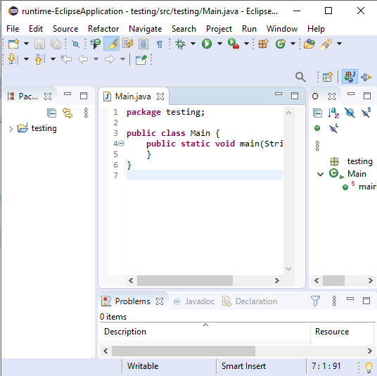
New:
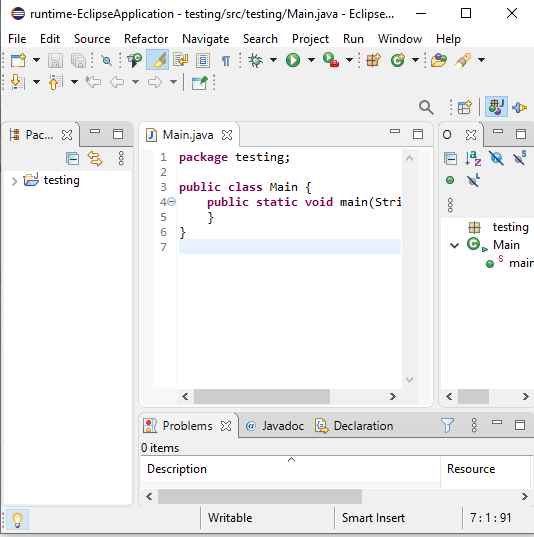

In order to switch back to using round tabs, a preference has been added.
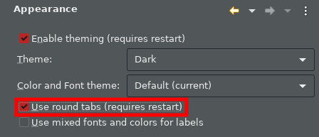
Please note that the classic themes have been configured to ignore this setting so that they remain unchanged.
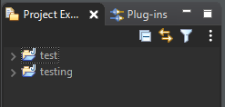
Preferences
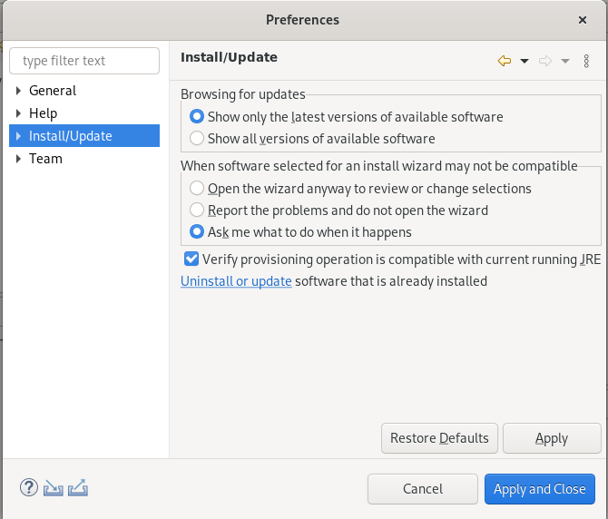
Here is how the error message looks like, for example when you're trying to install a unit that requires Java 14 and you're running the Eclipse IDE with an older Java version: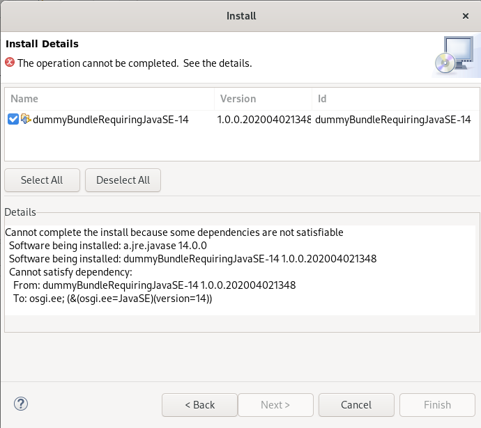
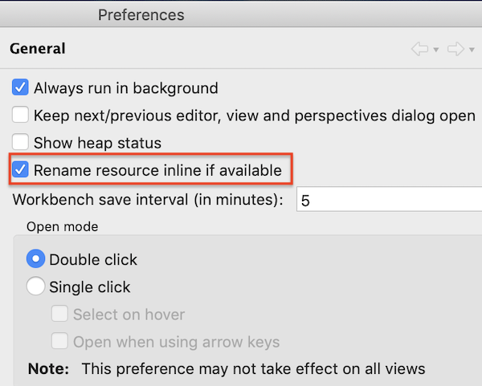
Debug
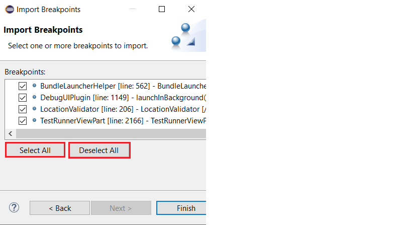
General Updates
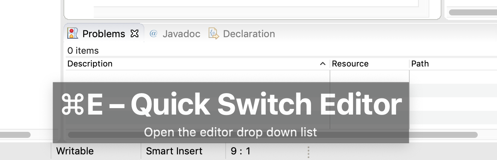
It is now possible to enable this feature separately for keyboard interaction and mouse clicks. So you can enable it for mouse clicks only, for keyboard interaction only or for both. Enabling this only for mouse clicks is very helpful for users who want to learn existing key bindings.
You can enable this on the Preferences dialog via the Show key binding when command is invoked group on the General > Keys preference page. To change this setting quickly the command 'Toggle Show Key Bindings' can be used (e.g. via the find actions dialog).
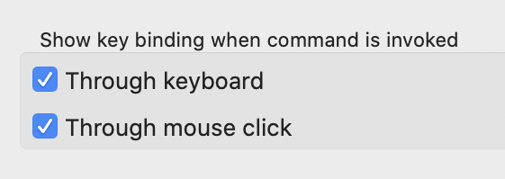